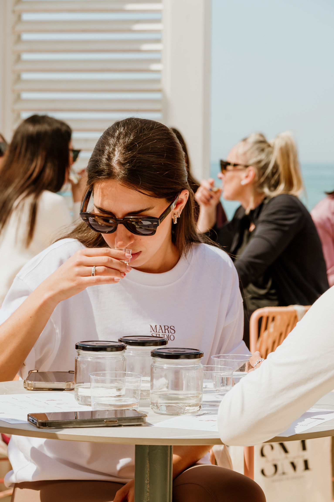
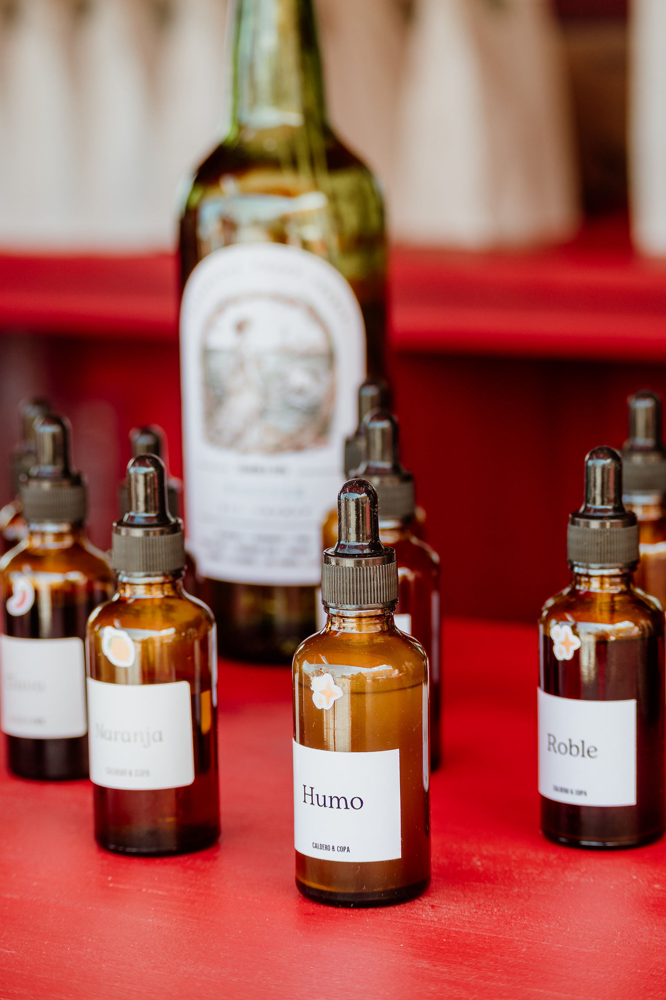
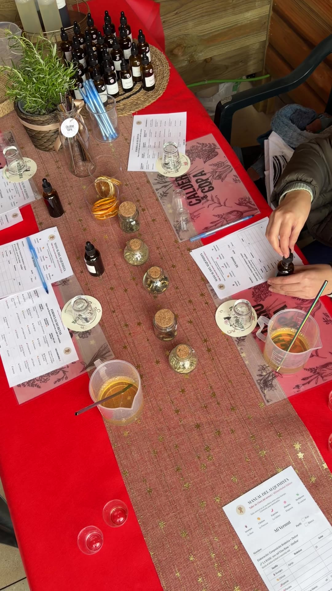
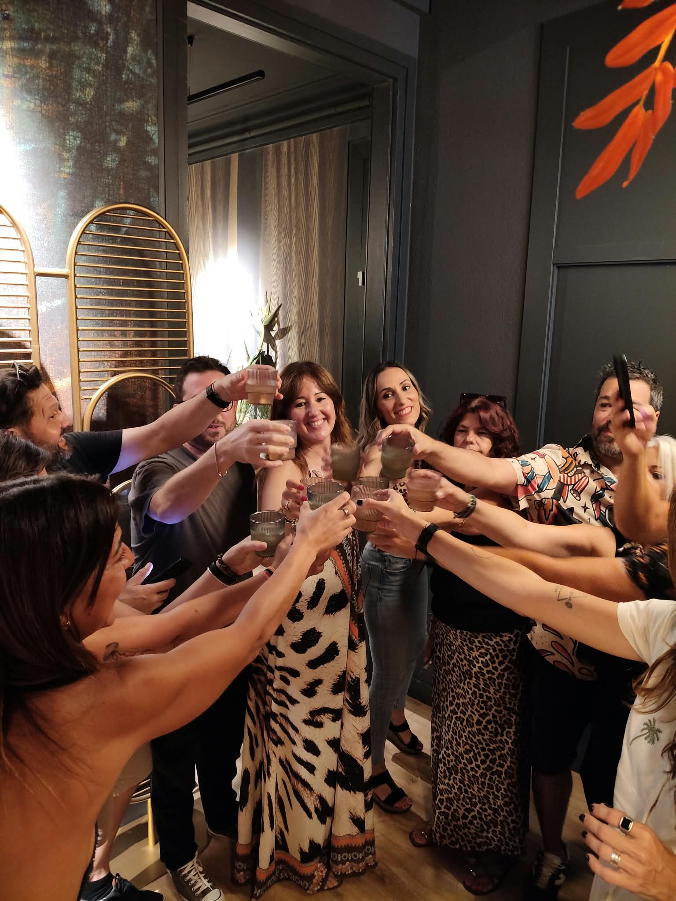
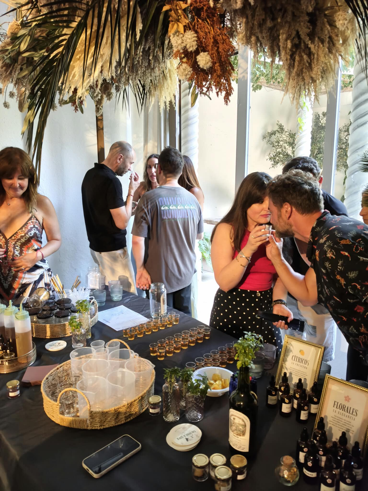
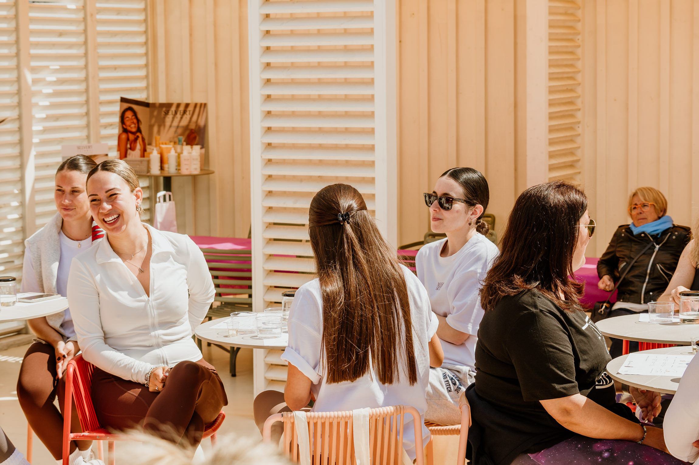
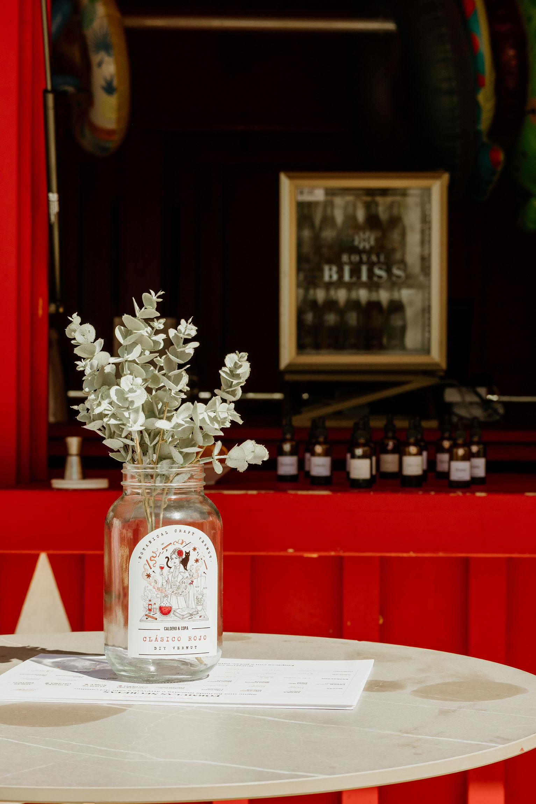

Maceramos plantas mediterráneas en alcohol y las combinamos con vino — el mismo proceso de boticario que dio origen al vermut. Lo servimos en catas, talleres y barras de autor allá donde nos inviten: bodegas, barcos, terrazas.
Botánicos macerados en directo, la historia del vermut contada sin aburrir, y siempre algo de juego de por medio.
Recorrido por botánicos por separado y luego ensamblados, con la historia del vermut de fondo — de remedio de boticario a aperitivo social. Nada de charla estática: se huele, se prueba y se pregunta todo el rato. De 45 a 90 minutos, grupos de 8 a 20 personas.
Cata a ciegas, reto de identificar botánicos por el olfato, equipos compitiendo por ensamblar el mejor vermut: la versión con más chispa para grupos de empresa que ya han hecho demasiadas charlas serias.
Cata + taller + maridaje para cumpleaños, despedidas, celebraciones de empresa. Nos adaptamos al espacio y al catering que ya tengáis montado.
La experiencia sensorial trasladada al mar: mismo formato de cata, ambientación náutica, ideal para grupos reducidos y eventos exclusivos.
Cada asistente prepara su propio vermut con nuestro kit botánico, paso a paso, y se lo lleva reposando a casa. El taller que mejor engancha.
Ferias, terrazas, talleres de empresa — según dónde nos inviten, cambia el montaje.






Seis perfiles botánicos, formulados y probados, para macerar tu propio vermut en casa. De momento los encontrarás en nuestras ferias y talleres — aquí, muy pronto, podrás pedirlos directamente.

Respondemos por WhatsApp — es la vía más rápida para fechas, presupuestos y disponibilidad.